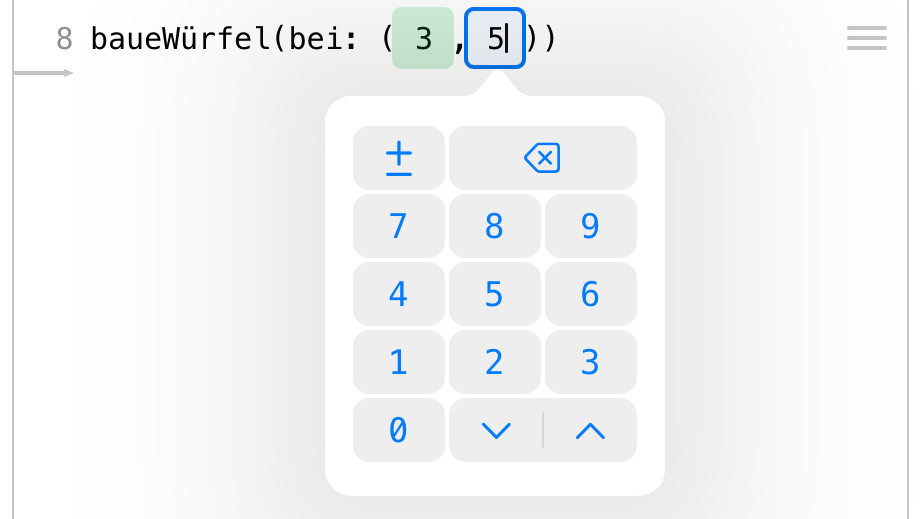
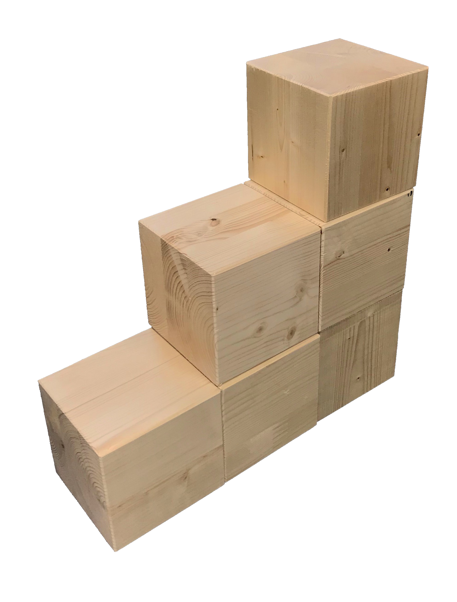

3 Programming with Cubeling
The goal of this section is not to turn your students into programmers with the help of digital cubes. Rather, the aim is to develop a feeling for an algorithmic perspective on building connected cube structures and to focus on the process of building. This process is documented, made translatable for a computer, and, through the use of basic coding structures like loops, the potential of these structures is made visible using the example of cube structures.
Cubeling’s code view was developed in connection with a trial at a school in Brandenburg. Based on the experiences gained in that project week, this chapter presents a possible sequence of four teaching blocks that can be used to explore the coding in the Cubeling app. Of course, a more spread out and gradual incorporation into math lessons is also possible.
3.1 Classification and goals
Coding with Cubeling addresses both mathematical and media informatics skills.
Mathematics Educational Standards. With regard to the educational standards for primary school level (KMK, 2005), the competency of representation is particularly encouraged: Students can create, select, and use appropriate representations for working on mathematical problems and can compare and evaluate representations with one another. At secondary school levels (KMK, 2004), the concept also furthers the competencies use of mathematical representations (especially creating and using standard representations of mathematical objects and situations, interpreting or modifying given representations reasonably, evaluating different representations and forms of representation in a purpose-oriented way) and dealing with symbolic, technical, and formal elements of mathematics (here specifically, using mathematical aids and digital mathematical tools directly, applying formal mathematical procedures, and selecting and using digital mathematical tools efficiently depending on the situation and purpose).
This is all implemented in the app’s concept with particularly the guiding principle of space and shape in mind.
The individual tasks most definitely also address numerous other general and content-related mathematical competencies, but the ones mentioned here represent the main goals of the concept.
KMK: Education in the digital world. The concept also contributes to fulfilling some of the competencies that were issued by the Standing Conference of the Ministers of Education and Cultural Affairs conference in their strategy for “Education in the digital world” (KMK, 2016). Particularly noteworthy here are: Recognizing and formulating algorithms (5.5), Knowing and understanding operating principles and basic principles of the digital world (5.5.1), Recognizing and formulating algorithmic structures in the digital tools used (5.5.2), and planning and using a structured, algorithmic sequence to solve a problem (5.5.3).
D-EDK: Media and Informatics. In the Curriculum 21 on the subject of “Media and Informatics” (D-EDK, 2016) issued by the German-Swiss conference of Directors of Education, some more detailed goals for education in connection with digital media are stated, which are targeted when coding with the Cubeling app. Particular emphasis in put on the following competencies (MI2.2): Students can read and manually execute simple sequences with loops and parameters; they understand that a computer can only execute predefined instructions and that a program is a sequence of such instructions; they can write and test programs with loops and parameters; they can formulate their own algorithms in the form of functioning and correct computer programs with variables; and they can compare and evaluate different algorithms for solving the same problem.
Self-discovery is of particular importance here. The experiences gained in cube building tasks lead to the discovery of general methods, which can be tested for effectiveness and efficiency during coding and possibly improved. The fact that this has to be done in a playful and action-oriented way is realized by the building of cube structures and the connections drawn to experiences from math lessons.
3.2 Introduction to processes of description
You will need:
about 10 small wooden cubes per student,
dice,
iPads with the Cubeling app installed,
worksheet (tasks 1 to 4)
possibly presentation with tasks
Recommended app settings:
Number of rows/columns: 7;
Wooden cubes; Show coordinate numbers and colored axes;
No loops or variables
3.2.1 Motivation and familiarization phase
Since we carried out this project in a class that was unfamiliar to us, we preceded the actual topic of the lesson with a familiarization phase. This phase, of course, also included mentions of cubes. If you already know the class, you can use similar tasks for motivation, perhaps also as homework, or you omit this phase altogether.
As a warm-up and a means to get to know each other, the students were given the following task:
Task
Toss a die and do all actions that are assigned to a number less than or equal to the one you rolled:
1 Make yourself a name tag!
2 Write an adjective in front of your name that begins with the same letter as your first name! 3 Draw a small picture on your name tag that has something to do with your favorite hobby! 4 Estimate how many cubes each of your classmates would have to take out of the box so that all children have the same number of cubes. Write this number on your name tag! 5 Think about what animal living in the forest you would most like to be and draw or write it on your name tag!
6 Try to recreate this animal using the cubes.
A large box with wooden cubes was placed on the teacher’s desk. We used wooden cubes of the size 2 x 2 x 2 cm.1
The first pragmatic purpose was of course the creation of the name tags. In addition, this task also includes the deliberate estimation of quantities, and the last task even already touches on to the upcoming activities with the cubes.
This phase already allows for various differentiation possibilities: Students who were able to finish their (few) tasks early can help others or complete further tasks voluntarily.
3.2.2 Formulating the goal
After this activity, the goal of the project was explained, namely that cube structures are to be created with the help of computers. As a small preview of what creative realms this can lead to, the popular game “Minecraft” was referenced, to which students reacted enthusiastically. Concrete knowledge about the computer game on the part of the teacher is not necessary. It is merely a matter of motivating the students and finding ties to their own lives.
Lesson goal
We want to use computers to build connected cube structures. The computer helps us to build relatively complex structures in a quick way.
3.2.3 Describing a cube
Since computers are not “thinking entities” per se, they always need to be told exactly what to do. This situation was playfully analogized by a fictitious encounter with an alien.
Imagine an alien standing in front of your door tomorrow morning. It has learned your language quickly due to its high intelligence, but its culture only has it knowing about round shapes. For your new board game, however, you need a cube/die?. Try to explain to the creature what a cube/die is.
Act out the situation with the person sitting next to you by pretending to be the alien! The alien here is completely unknowledgeable and should ask critical questions if it does not understand something. Afterwards, switch roles.
Especially the last point should be emphasized by the teacher, because the students in our session tended to take their previous knowledge as given and “probed” the other student less. But that is exactly the goal of the exercise! The point is to describe the shape of a cube as clearly and precisely as possible, so that everyone is able to unambiguously conceive this object. The alien serves as a representative object, for which it is necessary to describe with exactness.
Due to the openness of the task, there is no one correct solution. Therefore, in our case, the students tried to draw, build, or use terms like “corners,” “sides,” or “edges” to describe the shape. Depending on how much time you want to take for this task, you could discuss when a cube is mathematically unambiguously/well-defined or not. It is important to work out the different ways the descriptions were executed: verbally, through gestures, graphically, crafting, … In each of these cases, it can be discussed that an unambiguous, unequivocal description is not so easy. The advantages and disadvantages of each mode of describing can also be discussed. Describing cubes, cube structures, or the building process itself will be a common thread throughout the entire lesson. The alien situation has demonstrated the necessity of describing and can now be referred back to in the further course of the lesson.
3.2.4 Describing cube structures
The next step is now to describe a more complex shape: a connected cube structure. The students received the following task:
Put a privacy shield between you and the person sitting next to you. Think of a cube structure with 10 cubes and build it on your side. Explain to your partner how they can build this structure. Then compare your cube structures and switch roles.
What problems arose when describing the building process of the cube structure?
The goal of this task is the notion that it could be helpful to not only describe the finished structure, but also the process of how it was built. It also trains the development of a “command system”: Students had to think very carefully about which actions to mention without being misunderstood. Similar to the previous task, a wide variety of solutions were presented. For example, students divided their structures into smaller “easier units,” such as a row, a tower, or a 2x2x2 cube. They even gave interesting instructions like, “Make a 2x4 rectangle!” A further approach was to number the pieces and positions on the table - similar to a coordinate system or a checkerboard pattern. Most agreed, when discussing it as a class, that it makes the most sense to start with one cube and to then describe the next moves by using its spatial directions to specify on which side a certain number cubes should be placed. Instead of only “building” the structure, one group even described a larger, easier shape and then had cubes removed from it.
Many of these ideas and approaches are helpful to call on later when the students are “coding.” For example, the breaking down into “smaller units” is an essential approach in informatics and is reflected in the coding in the Cubeling app (e.g. building a row using loops). The idea of numbering is particularly prominent in the app through the checkerboard pattern and the desire for concrete locations of the cubes. Positions and relocations can be used to specify exactly in what direction the cubes are to be built, and the idea of removing cubes from a larger shape will also be found in a similar form in a later exercise task.
3.2.5 Free/unhindered exploration of the app
Compared to the alien situation, it is now the iPad that should be viewed as an “alien”: It needs to be told exactly how to build a specific cube structure. The children, in groups of two, were given 10 minutes (after a short explanation/demonstration how to handle the iPads) to experiment at will with the Cubeling app. The settings on all iPads were set to 7 rows/columns. Loops and variables were initially deactivated and the type of cube was set to “wooden cubes.”
Imagine you are architects and want to describe a cube structure to a computer so that it can model it. Unambiguity and clarity are of particular importance here.
Find out everything the Cubeling app can do.
The unhindered experimenting trains children’s quick comprehension skills and essentially allows everyone to adjust to and become familiar with a new (in this case virtual) environment at their own speed. To increase communication and so that not as many technical devices are needed, the children can work in pairs.
Afterwards, the most important functions of the app were collected in a class discussion. At this point it is not yet necessary to explain every minor detail. The most important questions that should be clarified in this round are the following:
- Which different views are there, what are they called, and how do I switch from one to the other?
- How do I build or remove cubes in the 3D view and in the building plan?
- How do I build or remove cubes in the code view?
- How can I hide one side?
- How can I remove all cubes (and the lines of code) at once?
- What do the colors blue and green represent?
These questions are important in that they help the students get to know the most important functions and, as the project progresses, they can use the technical terms for the different views when communicating with each other.
The code view is thus another possibility (apart from those usually already known) to display cube structures. This view does not necessarily have a special meaning at this point, but is rather just one of many. What power it actually possesses will be explored as the project progresses.
3.2.6 Exercises on building cube structures
This was followed by the first practice stage, which focused on a more in-depth engagement with the app.
Complete tasks 1 to 4 on the worksheet!
With the tasks 1 to 4, students can work through the individual views and functions of the app in a structured way. Some practical references (e.g., writing letters on a checkered pattern using cubes/blocks, like on the displays in the train) are also included and can be made the subject of discussion verbally. Task 3 (“Build the largest possible X!”) already reveals a special feature: In the code view, it is theoretically possible to build beyond the 7x7 board and thus build an “infinitely” large X. This is, of course, not feasible in practice, and even a size of 100 squares in each direction is very tedious without a loop. This issue is again addressed in task 4 (“What happens when I build a cube outside the given range?”). The overall purpose of the tasks is to better understand the concept of the app’s code view. Students should not only be able to use the app but also understand why some functionalities or graphical symbols are presented the way they are.
3.3 Working with the code view
You will need:
iPads with the Cubeling app installed,
worksheet (tasks 5 to 7)
possibly presentation with tasks
Recommended app settings:
Number of rows/columns: 7;
Wooden cubes;
Show coordinate numbers and colored axes; No loops or variables
3.3.1 Analysis of the code view
As soon as the first students had finished tasks 1 to 4, task 4 was discussed together on the (chalk/white)board. Tasks 1 to 3 are hard to compare and there was little need for discussion here. Smaller questions, especially geared towards the functionalities of the app, were mostly resolved during the individual work phase.
The discussion of task 4 was focused on getting familiar with the sequence tracking. It will be needed in the subsequent tasks and for visualizing loops.
 This stage also provides opportunity for making ties to working with negative numbers and describing locations in the plane with the help of a special coordinate system. We did not go into depth here, instead working rather intuitively with everything, which did not present any difficulties for the students. The changeable values for variables provided support: If you touch a coordinate in the code view, you can change it step by step using the green or blue arrows - also into the negative range.
The decision to be able to build beyond the borders of the board in both the positive and negative direction was in part implemented to avoid error messages/codes?: At latest, problems would arise with larger loops. In principle, the app is designed in such a way that hardly any errors occur, and the questions in task 4 draw attention to those few that are possible. The key here is to encourage the children to ask questions like “What happens if…?” Incorrect or incomplete lines of code are not executed.
3.3.2 Using the code view
After this the students worked on the tasks on the back of the worksheet.
Do tasks 5 to 7 on the worksheet!
Task 5 (reflection of cube structure in the code view) initially involves recognizing the mathematical structure for/of the reflection. The question about the transfer to an 8x8 or 9x9 board is supposed to motivate the generalization of the task and the underlying rules/regularity. We took this opportunity to show the class how to increase the size of the board up to 10x10 squares in the settings. During our run through, some students found the number pairs 1 and 7, 2 and 6, 3 and 5, … and also intuitively recognized a pattern. But only after our hint, “What do the two numbers add up to?” were they able to formulate a rule. The observed connection was recorded on the white/chalk board as follows:
or in general, if n is the number of rows/columns:
Whether the variables n, greenold, and greennew should actually be used or not depends greatly on the class. However, due to the concrete association with the built cube structures, no difficulties presented themselves in our run-through/execution. Interestingly, this observed connection is independent of whether n is even or odd - though when n is even, no cubes can be on the axis of reflection, but when n is odd, they can.
In task 5 (step-by-step addition of lines of code to build three cube structures), cubes must be added and removed from structure 1 to structure 2 and structure 3, respectively. The goal is to gain a first insight into the fact that during the construction of a cube structure, several “partial structures” are already created as well. This progression is easy to follow in the code.

We used task 7 as an additional task for students that finished ahead of everyone else. Here, the children generated their own structures. For further differentiation, you can ask about “particularly difficult” views. It can be addressed that some views are not unique and therefore one can easily confuse their partner (Gegner?). Supporting questions here are:
- Which views are unique?
- Why can I not tap to build in all views?
- Can I build two different buildings that have the same multiview orthographic projection, the same oblique view, or the same isometric view?
The fact that not all views allow building by touch is precisely due to the uniqueness. Only the 3D view and - for wooden cubes - the building plan and code view are unique. This discussion provides a good transition from the content of math lessons (uniqueness of projections, descriptions) to the code view in the app and thus to coding and working with algorithms. Coding (or programming) is therefore “only” an additional form of representation and made easily accessible to the children via the example of cube structures.
3.3.3 Distinction between process and product
The second half of the lesson deals with the distinction between “process” and “product.” For this, we set up a relatively simple cube structure and the class received the following task:
Build the cube structure in the code view! 
Compare the structure you have created with that of your neighbor. The following questions can help you:
- Has the same structure been created?
- Does it look like the one on the table at the front?
- Is the structure positioned correctly?
- Can you find a difference in any of the different views?
- Is one structure constructed “better” than the other? What might “better” mean in this context?
In most cases, the same structure as the one up front at the teacher’s desk was built. However, due to a non-existent coordinate system, the structures were in different positions/locations. In addition, it is possible to add cubes in a different order and to correct mistakes (for example, incorrectly placed cubes), which can still be seen in the code view. Especially the code view should stand out here, because it is not only the only always unique view, but it also stores information about the process of creation.
The discussion about a “better” construction can easily lead to the advantages of “coding.” For this purpose, the students were reminded of the initial scenario (“Imagine you are architects”). The length of the code (as few errors as possible) as an evaluation criterion or the sequence in which the construction of a structure is planned can hence be of significance. To illustrate this, a student can be asked to build a small wall of wooden blocks on the teacher’s desk. Mostly likely, for reasons of stability, they will not build and assemble little individual towers, but rather stack rows on top of each other. The order can therefore also be of relevance in practice.
In conclusion, the discussion can be summarized as follows:
Compared to all other views, the code view provides us not only with a unique representation of the cube structure, but also with a description of the construction process.
The idea that a program or an algorithm is a fixed sequence of well-defined actions is fundamental and significant in many school subjects. Even though the informatics terms do not have to (but can) be discussed at this point, an intuitive idea of them is developed, which is elaborated by the use of loops and variables in the next two lesson blocks.
Furthermore, the number of different ways there are to build the cube structure were talked about:
- How many different ways are there to build the cube structure without using a remove command?
- Can I swap two commands at random, when looking only at the result?
- Try to build the structure with exactly 20 commands! Is that even possible? Which numbers of steps are possible?
This exercise already uses combinatorial considerations. However, it is not so crucial to actually determine the correct number of possibilities. Rather, the students should become aware that there are different possibilities and that the code therefore describes the process of construction.
3.4 Loops and loop variables
Du benötigst:
iPads with the Cubeling app installed,
possibly presentation with tasks
Recommended app settings:
Number of rows/columns: 10;
Wooden cubes; Show coordinate numbers and colored axes;
Allow loops and variables
3.4.1 Introduction to repeat loops
In this lesson block, repeat loops and loop variables were conveyed in a clear and understandable way. The students were taught how helpful these control structures are in creating a shorter and thus “better” code. Also, the performance of a computer and especially a code is emphasized. To this end, we worked on the construction of a wall a total of four times, always improving the approach.
1st wall construction: Without loops. To start, students were given the following task:
Build a wall that is 11 cubes long and 6 cubes high!
The task indirectly forces the use of the code view, since only it can add cubes outside of the 10x10 range.
 Afterwards, it was discussed that it seems to be extremely complicated and time-consuming to erect such a simple, in terms of its shape, cube structure. To motivate the students and as an outlook, the class can be briefly shown how, at the end of the lesson, the structure can be built with only 7 instead of the previous 66 rows. Additionally, the class can be stunned with how easily the height or length of the wall can be changed at will using the red arrow keys. This sparked noticeable amazement and ambition in the class, making the referral to the end goal a suitable lesson starter in this case.
Afterwards, it was discussed that it seems to be extremely complicated and time-consuming to erect such a simple, in terms of its shape, cube structure. To motivate the students and as an outlook, the class can be briefly shown how, at the end of the lesson, the structure can be built with only 7 instead of the previous 66 rows. Additionally, the class can be stunned with how easily the height or length of the wall can be changed at will using the red arrow keys. This sparked noticeable amazement and ambition in the class, making the referral to the end goal a suitable lesson starter in this case.
The structure can theoretically be much more easily described verbally. Because of this, one can refer to the verbal possibilities devised in the first lesson to describe a structure: For example, one can say “Do … x times!” Such an action is called a loop. To be able to use them in the app, loops and variables have to be allowed in the settings. Afterwards, we showed the children how to easily build a tower 50 cubes high with only 2 commands. The meaning of the curly brackets are explained during this (everything written inside them is repeated) and how they can change the number of repetitions using the red arrows (similar to the variables for specifying coordinates). They are then asked to try it out for themselves using the following example:
Build a bulky 2x2 tower with a height of 30!
The students were not used to the order of commands here. One would naturally rather say “Add cube at position … and do this … times!” the code first requires the number of repetitions (“do … times”) and only then is the actual add-cube command inserted inside the curly brackets. By moving lines of code into the loop, however, this can also be done in the more intuitive order.
 Die Aufgabe bietet ebenso wieder eine Diskussion zu einem möglichst „guten“ Code an. So produzieren die in den Abbildungen dargestellten Codes beide dasselbe Endprodukt. Zur Diskussion dieser beiden Möglichkeiten bietet sich die Ablaufverfolgung an. Wir haben hierfür zwei iPads mithilfe der Software „Reflector“ gleichzeitig an die Tafel projiziert und dann haben die Kinder abwechselnd immer Schritt für Schritt die Ablaufverfolgung gezeigt. Dabei wurde sichtbar, dass in der oberen Variante der Turm „etagenweise“ gebaut wird, in der untern Abbildung „turmweise“. Erstere Variante ist damit nicht nur im Code deutlich kürzer, sondern auch für die Reihenfolge des Bauens wesentlich stabiler. Dies führte zum Erstaunen vieler Schülerinnen und Schüler, denn auch diejenigen, die die erste Variante programmiert haben, rechneten nicht unbedingt damit, dass auf alle vier Felder jeweils ein Klötzchen gelegt wird, bevor die nächste Etage erzeugt wird. Das liegt v. a. daran, dass der Code „live“ ausgeführt wird, d. h. wenn man innerhalb der Schleife den zweiten, dritten bzw. vierten Baue-Befehl eintippt, wird der komplette Code sofort ausgeführt und man sieht in der 3D-Ansicht immer nur die neu hinzugekommenen Würfeltürme – nicht jedoch die Reihenfolge ihrer Entstehung.
Die Aufgabe bietet ebenso wieder eine Diskussion zu einem möglichst „guten“ Code an. So produzieren die in den Abbildungen dargestellten Codes beide dasselbe Endprodukt. Zur Diskussion dieser beiden Möglichkeiten bietet sich die Ablaufverfolgung an. Wir haben hierfür zwei iPads mithilfe der Software „Reflector“ gleichzeitig an die Tafel projiziert und dann haben die Kinder abwechselnd immer Schritt für Schritt die Ablaufverfolgung gezeigt. Dabei wurde sichtbar, dass in der oberen Variante der Turm „etagenweise“ gebaut wird, in der untern Abbildung „turmweise“. Erstere Variante ist damit nicht nur im Code deutlich kürzer, sondern auch für die Reihenfolge des Bauens wesentlich stabiler. Dies führte zum Erstaunen vieler Schülerinnen und Schüler, denn auch diejenigen, die die erste Variante programmiert haben, rechneten nicht unbedingt damit, dass auf alle vier Felder jeweils ein Klötzchen gelegt wird, bevor die nächste Etage erzeugt wird. Das liegt v. a. daran, dass der Code „live“ ausgeführt wird, d. h. wenn man innerhalb der Schleife den zweiten, dritten bzw. vierten Baue-Befehl eintippt, wird der komplette Code sofort ausgeführt und man sieht in der 3D-Ansicht immer nur die neu hinzugekommenen Würfeltürme – nicht jedoch die Reihenfolge ihrer Entstehung.
Natürlich bleibt zu erwähnen, dass die zweite Variante nicht grundsätzlich falsch ist. Sie ist lediglich weniger geschickt. Die Unterscheidung zwischen Prozess- und Produktbetrachtung aus dem letzten Unterrichtsblock wird hier erneut deutlich. Wahrscheinlich werden die Kinder in ihrem spielerischen Eifer versuchen, die Höhe des Turms auszureizen. Hier stößt allerdings auch das iPad an seine Grenzen, so dass bspw. bei 500-facher Wiederholung zu einem Absturz der App kommen kann. In dem Fall muss man sie vollständig schließen und wieder öffnen.
2. Mauerbau: Schleife ohne Laufvariablen. Nachdem die Schülerinnen und Schüler Schleifen kennengelernt haben, können sie nun die 11x6-Mauer erneut bauen. Dies ist (solange man keine Doppelschleifen verwendet) mit elf Schleifen der Art „mache 6 mal“ möglich – dies sind dann insgesamt 33 Code-Zeilen.
3.4.2 Erkundung von Laufvariablen
Die Nutzung von elf Schleifen ist zwar schon deutlich besser, aber noch nicht optimal. Um sich weiter zu verbessern, erhält die Klasse zehn Minuten Zeit, um folgende Aufgabe durch Probieren und Experimentieren zu bearbeiten:
Erkunde selbst, was man mit den Befehlen setze und ändere machen kann!
Ähnlich wie im ersten Unterrichtsblock stand das Entdecken durch Probieren im Vordergrund. Interessant war der Umstand, dass die Schülerinnen und Schüler die Funktionen bereits etwas zielstrebiger als noch im ersten Unterrichtsblock einsetzten. Die Frage „Was passiert, wenn ich …?“ war deutlich häufiger zu vernehmen, als noch in den letzten Unterrichtsstunden. Das kann natürlich auch daran liegen, dass die Klasse hier lediglich zwei Funktionen im Gegensatz zu einer völlig neuen App erkunden sollten. Dennoch hat sich diese Herangehensweise nach unserer Wahrnehmung verbessert.
3.4.3 Systematische Behandlung von Laufvariablen
Zur Erarbeitung der Laufvariablen haben wir uns kurz vom Tablet entfernt und das „Spiel der Bauarbeiter/-innen“ gespielt. Ziel war es, eine erste Vorstellung der Variablen (in der App „Positionen“ genannt) und deren Änderung („ändere um …“) während des Bauprozesses zu veranschaulichen. Hierfür nutzten wir analog zur App ein 7x7-Feld auf einer Teppichmatte. Die Linien wurden ebenso gestaltet, dass sie denen in der App entsprechen. Ein solches Feld lässt sich aber auch relativ schnell mit Malerkrepp auf dem Fußboden im Klassenraum herstellen. Außerdem besaßen wir einen Satz großer Holzklötze (12 x 12 x 12 cm), die exakt in die Felder des gezeichneten Spielplans passten. Einige Schülerinnen und Schüler erhielten Bauarbeiterhelme, versehen mit den Buchstaben A bis D.
 Diese vier Schülerinnen und Schüler erhielten zusätzlich ein Schild um den Hals, auf dem sie ihre derzeitige Position mit grüner und blauer Farbe eintragen können (hierfür eigenen sich laminierte Blätter, auf denen mit abwischbaren Folienstiften geschrieben wird). Die umstehenden Kinder haben dabei geholfen, sodass diese Tätigkeit nicht allzu viel Zeit in Anspruch nahm. Zusätzlich gab es eine Bauaufsicht (mit anderer Helmfarbe). Die Lehrkraft dient nun als Architekt bzw. Architektin, indem sie einen Code vorgibt. Die Aufgabe der Bauaufsicht ist es dann, die Bauarbeiterinnen und Bauarbeiter anzuweisen, welche Position sie jeweils einzunehmen haben und wo demnach ein Würfel gebaut bzw. entfernt werden soll. Anschließend konnte das fertige Bauwerk mit dem in der 3D-Ansicht am Tablet verglichen werden.
Diese vier Schülerinnen und Schüler erhielten zusätzlich ein Schild um den Hals, auf dem sie ihre derzeitige Position mit grüner und blauer Farbe eintragen können (hierfür eigenen sich laminierte Blätter, auf denen mit abwischbaren Folienstiften geschrieben wird). Die umstehenden Kinder haben dabei geholfen, sodass diese Tätigkeit nicht allzu viel Zeit in Anspruch nahm. Zusätzlich gab es eine Bauaufsicht (mit anderer Helmfarbe). Die Lehrkraft dient nun als Architekt bzw. Architektin, indem sie einen Code vorgibt. Die Aufgabe der Bauaufsicht ist es dann, die Bauarbeiterinnen und Bauarbeiter anzuweisen, welche Position sie jeweils einzunehmen haben und wo demnach ein Würfel gebaut bzw. entfernt werden soll. Anschließend konnte das fertige Bauwerk mit dem in der 3D-Ansicht am Tablet verglichen werden.
Durch dieses Spiel wird die Dynamik des Prozesses erkennbar. Die Bauarbeiterinnen und Bauarbeiter stehen für die im Code gesetzten Positionen, die sich im Laufe des Bauprozesses verändern. Die Bauaufsicht hat die Aufgabe, den Code korrekt auszuführen, also bspw. die Anzahl der Durchgänge von Wiederholungsschleifen zu zählen. Natürlich kann dieses Spiel im weiteren Verlauf mit verschiedenen Rollen beliebig ausgeschmückt werden.
Anschließend können natürlich sämtliche Rollen auch mit anderen Schülern und Schülerinnen besetzt werden, sodass alle Kinder einmal praktische aktiv geworden sind. Evtl. bietet es sich sogar an die Klasse in 2 Gruppen zu teilen und 2 Spielfelder vorzubereiten, da sonst einfach zu viele Personen um das Feld stehen und sich sogar gegenseitig die Sicht klauen können. Für uns überraschend war, dass die Schülerinnen und Schüler kaum Probleme mit dem „ändere“-Befehl hatten, obwohl die in ihm angegeben Koordinaten eine Verschiebung und keine Position mehr darstellen. Der Befehl unterstützt dies durch die Bezeichnung „ändere(…, um: …)“, während Positionen mit „baueWürfel(bei: …)“ bezeichnet werden. Das Spiel bietet durch das explizite Ausrechnen der neuen Positionen Erfahrungen im Umgang mit den Befehlen. Außerdem wird auch in der Ablaufverfolgung der App angezeigt, wie der jeweils aktuelle Wert einer Position ist. Die unterschiedliche Nutzung der Koordinaten für Positionen und Verschiebungen ist vergleichbar mit den Orts- und Richtungsvektoren in der Sekundarstufe II.
Bei unserer Durchführung sind im anschließenden Unterrichtsblock einige Schülerinnen und Schüler, die Schwierigkeiten mit ihrem Code hatten, selbstständig zum Teppich gelaufen und haben dort den Bauprozess noch einmal nachvollzogen. Du solltest also als Lehrkraft, wenn der Platz es hergibt, dieses Feld (oder als Alternative eines mit kleinen Holzwürfeln) dauerhaft zur Verfügung stellen.
3. Mauerbau: Schleife mit Laufvariablen. Dank der Laufvariablen, benötigt die 11x6-Mauer nun nur noch 6 Schleifen der Art „mache 11 mal“, wobei vor jeder solchen Schleifen eine Position festgelegt wird, an der dann innerhalb der Schleife gebaut und die innerhalb der Schleife um (1,0) verschoben wird. Der Code reduziert sich damit weiter auf 30 Code-Zeilen.
3.5 Vertiefende Übungen
Bis hierhin haben die Schülerinnen und Schüler nun die gesamte App kennengelernt und sollten mit deren Handhabung zurechtkommen. Ziel dieses Blockes was nun das intensive Üben und die tatsächliche Arbeit an mathematischen oder programmiertechnischen Problemen.
3.5.1 Übungen zu Laufvariablen
Der erste Schritt ist nun, vom leidlichen Ausführen des Codes hin zur eigenen Erstellung nach bestimmten Mustern zu gelangen. Die Anwendung der Laufvariablen stellt hierbei das komplexeste Thema dar und erfordert erwartungsgemäß einiges an Übung. So haben wir zu Beginn der Stunde kurz mündlich wiederholen, was man mit den Befehlen „setze“ und „ändere“ machen kann. Anschließend erhielten die Schülerinnen und Schüler folgende Aufgabe:
Baue ein Klötzchen auf einem beliebigen Feld!
Baue von diesem Feld aus eine Reihe mit 40 Klötzchen in folgende Richtungen:
- nach rechts
- nach vorn
- nach links
- nach hinten
- diagonal nach vorn rechts
- diagonal nach vorn links
- diagonal nach hinten links
- diagonal nach hinten rechts
Je nach Sichtweise auf die 3D-Ansicht kann man auch von „oben“ statt „vorn“ und „unten“ statt „hinten“. Wir nutzten erst die Bezeichnung „oben“, weshalb einige Schülerinnen und Schüler jedoch in die Höhe gebaut haben.
Insgesamt ergibt sich ein Muster, das an einen Stern erinnert. Das Endprodukt haben wir auch an die Tafel projiziert. Die Übung scheint sehr aufwendig zu sein und macht im ersten Moment den Eindruck, dass immer wieder stupide dasselbe gemacht werden müsste. Allerdings war es für die Schülerinnen und Schüler an der Stelle eine große Herausforderung, die richten Änderungen der Laufvariablen einzugeben. Insbesondere die Änderung um negative Zahlen war hier – verständlicherweise – nicht intuitiv. Allerdings blieben die Kinder „am Ball“ – die Aussicht auf das fertige Würfelbauwerk scheint also Motivation genug gewesen zu sein, die Aufgabe auch erfolgreich zu lösen.
3.5.2 Diskussion zum Live-Coding
Dass die App den Code immer sofort live ausführt, soll natürlich als Hilfestellung für die Schülerinnen und Schüler gedacht sein. Allerdings kann es die Lernenden allerdings auch verwirren, was im Unterricht aufgegriffen werden sollte. Dieser Fall trat sogar relativ häufig auf. Angenommen, man baut einen Würfel auf dem Feld (4,4) und will von dort aus nun eine Reihe von 40 Klötzchen nach vorn bauen. Der fertige Code sieht folgendermaßen aus:

Viele Schülerinnen und Schüler hatten auch diese richtige Idee, waren dann jedoch verwirrt, bevor sie den „ändere“-Befehl eingegeben haben:
An dieser Stelle gibt einem das Live-Coding nämlich einen Turm bei (4,5) aus. Die Lernenden dachten nun, dass sie etwas falsch gemacht hätten, da sie an dieser Stelle natürlich keinen Turm haben wollten. Hier wurde dann mit der Klasse diskutiert, wieso die App dies tut. Sollten die Schülerinnen und Schüler zu sehr verwirrt werden, bietet es sich zunächst an, die linke Seite der App temporär auszuschalten und erst nach Fertigstellung des Codes zu überprüfen. Diese Live-Coding-Diskussion kann natürlich auch an anderer Stelle schon geführt werden. Wir haben sie hier aufgeführt, da es bei den 40er-Reihen im Unterricht bei besonders vielen Schülerinnen und Schülern sichtbar wurde.
3.5.3 Doppelschleifen
4. Mauerbau: Doppelschleifen. Die meisten Kinder fühlten sich mit der Anwendung der Laufvariablen nach dieser Übung relativ sicher. Bevor die Schülerinnen und Schüler sich nun finalen Üben widmen durften, kam es zur Auswertung des kompaktesten Weges, die 11x6-Mauer zu bauen. Durch das praktische Vorzeigen auf dem Spielfeld wurde im Unterrichtsgespräch der Code zunächst in Worten entwickelt: Man baut 6 Klötzchen übereinander und geht dann ein Feld nach rechts. Diesen gesamten Prozess muss man 11 mal hintereinander ausführen.
Die Entwicklung des Codes mit Worten war sehr hilfreich und wurde in einer „Pseudo“-Sprache an der Tafel schrittweise entwickelt:
Schritt 1:
baue 6er-Turm
gehe eins nach rechts
baue wieder 6er-Turm
mach das insgesamt 11 mal Schritt 2:
mache 11 mal {
baue 6er-Turm
gehe eins nach rechts
}Schritt 3:
setze PositionA auf (1,1)
mache 11 mal {
baue 6er-Turm bei PositionA
ändere PositionA um (1,0)
}
Nun galt es, diesen noch in die Klötzchen-Programmiersprache zu übersetzen, also letztlich das Bauen des Turmes noch als Code auszudrücken. Es ergibt sich eine Schleife in der Schleife. Ein Kind aus der Klasse hat diesen Code erzeugt, während sein iPad live an die Tafel projiziert wurde. Anschließend hat jeder diesen Code noch einmal für sich programmiert und überprüft, wie durch eine Änderung der 11 und 6 mithilfe der roten Pfeile leicht Zeilen oder Spalten der Mauer hinzugefügt bzw. entfernt werden können. Der Code hat sich damit auf 7 Zeilen reduziert – von ursprünglich 66.
Auch kann thematisiert werden, dass durch die Ablaufverfolgung deutlich wird, dass dieser Code nicht besonders praktisch ist, wenn es um die Stabilität beim Bauprozess geht (da eben turmweise und nicht etagenweise gebaut wird). Dies liegt an der Programmiersprache, da man für Türme die Positionen nicht verändern muss und damit Zeilen im Code spart. Als Zusatzaufgabe konnten die Lernenden am Ende der Stunde überlegen, wie der Code aussehen müsse, damit übereinander liegende Reihen gebaut werden. Ist es dann auch noch so einfach, Zeilen oder Spalten hinzuzufügen? Wieso nicht?
3.5.4 Komplexe Übungen
Schließlich wurde den Schülern und Schülerinnen per AirDrop Bildschirmfotos von komplexeren Gebäuden geschickt, sie sie nun mithilfe von Wiederholungsschleifen und Laufvariablen möglichst effektiv bauen sollten. Dabei wurden die Aufgaben immer komplizierter, bis hin zu einer dreifachen Schleife bei einem großen Würfel.
Programmiere die Würfelbauwerke!
Auch diese Aufgaben bieten wieder das Potenzial, verschiedene Lösungswege zu diskutieren und über eine Optimierung des geschriebenen Codes nachzudenken. Gleichzeitig kann hier auch die Kreativität der Schülerinnen und Schüler beim Erstellen eigener Gebäude gefördert werden.
3.6 Zusammenfassung und weiterführende Möglichkeiten
Zum Schluss der Stunde wurde die Klasse gebeten, die Projektphase auszuwerten und Wünsche zu äußern. Häufig wurde beschrieben, dass sie gelernt hätten, wie praktisch und mächtig die Code-Ansicht ist und dass sie sich anfänglich gescheut hätten, mit ihr zu arbeiten, nun diese aber sogar präferieren würden („Am Anfang fand ich das mit dem Code ja nicht so spannend, da habe ich lieber in der 3D-Ansicht gebaut. Aber jetzt, wo wir die Schleifen haben, mach ich das lieber mit dem Code.“). Außerdem wünschten sich einige Kinder farbige Klötzchen in der App oder die Programmierung auch mit den Steckwürfeln, um beispielsweise Häuser mit Fenstern bauen zu können. Es war eine große Begeisterung für das Erlernen des „Architekten-Daseins“ und des Programmieren sichtbar, viele Schülerinnen und Schüler stellten auch noch nach dem Pausenklingeln Fragen, wie etwa zur alternativen Methode für die 11x6-Mauer. Außerdem wurden wir häufig gefragt, ob es eine Möglichkeit gibt, die App auch privat zu Hause nutzen zu können. Das Interesse der Klasse und die Begeisterung über diese für viele Kinder sehr außergewöhnliche Art der Arbeit war deutlich zu spüren.
Aus didaktischer Sicht wollen wir noch einmal betonen, dass die App in ihrer Komplexität eingeschränkt ist. Farbige Würfel oder Steckwürfelprogrammierung ist nicht möglich und für die Zukunft auch nicht angedacht. Ziel ist es, mithilfe der App einen Einblick in die Grundideen der Programmierung, insbesondere von Schleifen, anhand der Darstellung von Würfelbauwerken zu gewinnen. Weiterführend kann dann auf Programme wie Minecraft (siehe z. B. https://minecraft-de.gamepedia.com/Koordinaten) zurückgegriffen werden, in denen der Kreativität tatsächlich kaum mehr Grenzen gesetzt sind.
for example ones found on www.holzwuerfel.com↩︎